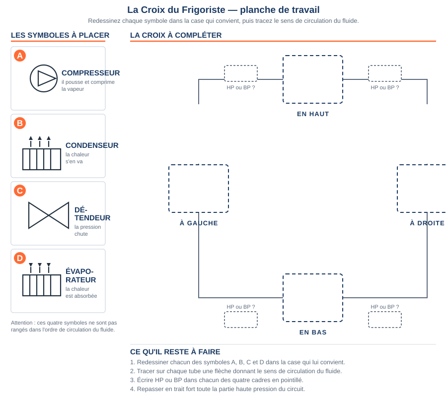
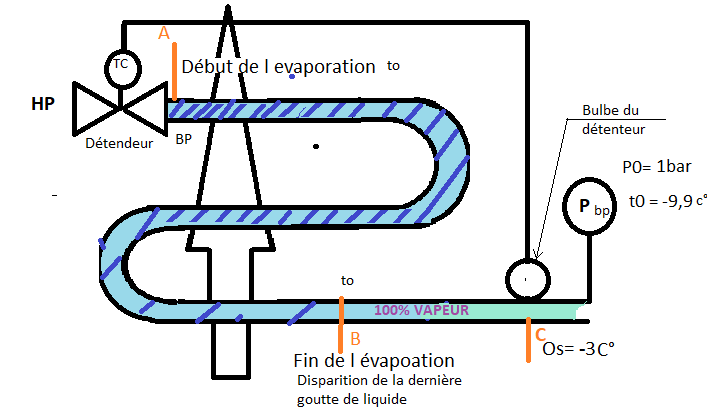

Module THÉORIE T1 · 1 hLe détendeur et la surchauffe
SéquenceS11 · sem. 4
Nom________________
Prénom________________
Date________________
Positionnement01234
Tâches
Module de renforcement — pas de tâche d'atelier ancrée ce jour
Savoirs
S5.1 Systèmes thermodynamiques à détente directe
Savoir-être
Rigueur du raisonnement · honnêteté de l'auto-positionnement
Compétence
Découverte — non remontée module de renforcement du savoir S5.1, préparatoire au module atelier A2-c
Accroche
Sur le chantier de la ligne liquide (module A2), un technicien relève au manomètre BP une pression qui
correspond à une température de saturation de 0 °C. Il pose son thermomètre de contact sur le tube
d'aspiration, juste à la sortie de l'évaporateur : il lit 7 °C.
Question de départ — Que se passerait-il si, au lieu de 7 °C, le
thermomètre affichait exactement 0 °C, la même valeur que la température lue au manomètre ? Qu'est-ce que
cela signifierait sur l'état du fluide à cet endroit du circuit ?
DÉCOUVERTE — le rôle du détendeur
Observez le schéma ci-dessous : c'est la croix du frigoriste, la
représentation de principe d'un circuit frigorifique à détente directe.
La croix du frigoriste, telle que vous l'avez construite en S10 : condenseur en haut, compresseur à droite, détendeur à gauche, évaporateur en bas.
Observation 1 — Sur le schéma, entre quels deux organes le détendeur
est-il placé ? Notez ce qui arrive au détendeur (repère 2) et ce qui en sort (repère 3).
Observation 2 — Le détendeur sépare la haute de la basse pression. À votre avis,
dans quel état le fluide y entre-t-il — liquide, vapeur, ou les deux ? Et dans quel état en ressort-il ?
Répondez avant de lire l'encadré suivant : c'est votre hypothèse qui compte ici.
Ce que fait le détendeur
Le détendeur est placé entre la ligne liquide haute pression
(sortie condenseur, fluide entièrement liquide) et l'évaporateur basse pression. En traversant le
détendeur, le fluide subit une chute brutale de pression. Cette chute de pression entraîne une
chute de température et le début de la vaporisation : à la sortie du détendeur, le fluide est
un mélange liquide/vapeur à basse pression et basse température, prêt à s'évaporer dans l'évaporateur
en captant de la chaleur.
Le détendeur régule aussi le débit de fluide qui entre
dans l'évaporateur : il en laisse passer juste assez pour que tout le fluide ait le temps de s'évaporer
avant la sortie, ni trop peu (évaporateur mal alimenté), ni trop (risque de liquide non évaporé en sortie).
Question — À votre avis, pourquoi est-il important que le détendeur
ne laisse pas passer trop de fluide liquide d'un coup vers l'évaporateur ?
Observez maintenant le schéma complet du circuit, avec les deux grandeurs
mesurées sur le chantier : la surchauffe côté basse pression, le sous-refroidissement côté
haute pression (vu en détail au module T2).
Où mesurer chaque grandeur. La surchauffe se mesure à la sortie de l'évaporateur, sur la ligne d'aspiration basse pression (encadré bleu). Le sous-refroidissement (encadré orange) sera étudié au module T2.
Observation 3 — D'après l'encadré bleu du schéma, avec quelle formule
calcule-t-on la surchauffe ? Recopiez-la.
À la sortie de l'évaporateur, tout le fluide doit être entièrement
vaporisé (plus une seule goutte de liquide). Si on continue à chauffer légèrement cette vapeur, sa
température dépasse un peu la température de saturation correspondant à la pression lue au manomètre
BP. Cet écart s'appelle la surchauffe :
Définition — la surchauffe
Surchauffe = température mesurée (thermomètre de contact, sur le
tube d'aspiration) − température de saturation (lue au manomètre BP, convertie en température par le
diagramme du fluide ou la réglette).
Elle prouve que le fluide qui entre au compresseur est bien
100 % vapeur, sans aucune trace de liquide.
Question — Pourquoi est-ce grave si du liquide arrive au compresseur ?
(Un compresseur est fait pour comprimer un gaz, pas un liquide.)
Seuil autorisé — à retenir
La surchauffe normale se situe entre 5 et 10 K (kelvins, soit le même écart qu'en degrés Celsius).
Surchauffe trop faible (proche de 0 K, voire négative) → risque de liquide au compresseur.
Surchauffe trop forte (bien au-delà de 10 K) → l'évaporateur n'est pas assez alimenté, la
puissance frigorifique baisse.
Toute autre valeur numérique que 5-10 K
rencontrée sur un autre document ou une autre plaque signalétique : selon plaque/notice, à faire
valider par le professeur.
Exercice 1 — replacer le détendeur sur la croix vierge
La croix ci-dessous est vide et les symboles sont en réserve, comme en S10.
Sans revenir en arrière dans le document : redessinez le symbole du détendeur dans la case qui lui
revient, puis tracez la flèche du sens de circulation qui le traverse — de la ligne liquide vers
l'évaporateur. Placez ensuite les trois autres organes pour vérifier que votre croix tient debout.

Exercice 2 — calcul guidé d'une surchauffe, méthode pas-à-pas
La démarche en 3 étapes
1. Relever la pression BP au manomètre → en déduire t0,
la température de saturation (donnée directement dans chaque cas ci-dessous). 2. Relever θs,
la température réelle au thermomètre de contact, sur le tube d'aspiration (donnée directement ci-dessous).
3. Calculer Surchauffe = θs − t0, puis comparer au seuil 5-10 K.
Voici 4 cas relevés sur chantier, à traiter avec la méthode ci-dessus :

4 cas de chantier — pour chacun, calculez la surchauffe avec la méthode ci-dessus.
Cas
t0 — température de saturation (donnée)
θs — température mesurée (donnée)
Calcul
Résultat
Dans la plage 5-10 K ?
1
5 °C
11 °C
☐ Oui ☐ Non
2
−10 °C
0 °C
☐ Oui ☐ Non
3
R448a, P0 = 2 bar → −15 °C (table du fluide)
−15 °C
☐ Oui ☐ Non
4
−12 °C
−6 °C
☐ Oui ☐ Non
Question — Le cas 3 donne une surchauffe de 0 K. Que risque-t-on si
cette valeur se confirme sur une vraie installation, et que faut-il faire avant de continuer ?
Exercice 3 — vrai ou faux
Affirmation
Vrai / Faux
Le détendeur est placé entre le condenseur et le compresseur.
☐ Vrai ☐ Faux
La surchauffe se mesure à la sortie de l'évaporateur.
☐ Vrai ☐ Faux
Une surchauffe de 0 K signifie qu'il n'y a aucun risque pour le compresseur.
☐ Vrai ☐ Faux
Le détendeur fait chuter la pression et la température du fluide.
Ce module de renforcement n'est pas remonté
en compétence sur École Directe : il prépare le module atelier A2-c, où la surchauffe sera mesurée
réellement au banc.
D'après : schéma
« Surchauffe et sous-refroidissement » et schéma « La croix du frigoriste » (F. Henninot) ; exercice 2 —
« 2 FCA Révision surchauffe » et son corrigé (F. Henninot).